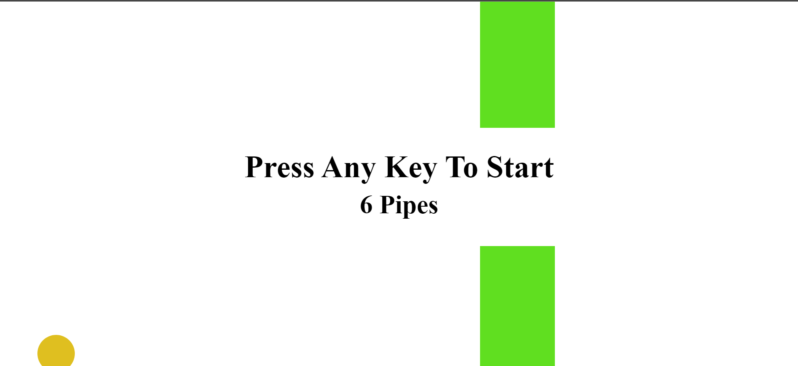

My Projects
1 / 3

Javascript clock that can display real time
2 / 3

Flappy bird game clone
3 / 3

Pokedex webapp made with react.js
- The projects that are displayed
are my "practice projects", I made them
so that I can practice more on how to actually
use and implement the technologies that were used.
- Similar projects can be seen in youtube and in github as well.
- I plan to create more projects that uses different web development technologies
and also software development tools soon.